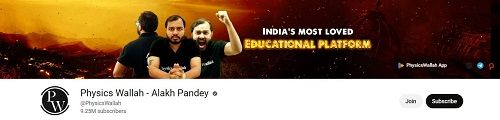

Divyank choudhary roll no :(lci2026015) branch: CSAI
Youtube educators
YouTube has become one of the best educators , although it is a social media app which are known for their bad impact on students , is providing a quality education to students in need . this platform is also helpful for students who somehow missed theier class because of some instances . also as youtube is free and available for all it has become the hope for many students who are eager to study but due to financial condition could not take a offline course to study . youtube provide a variety of teacher and courses Whether you want to understand quantum physics, learn how to code, or explore rajasthan history, there is likely a high-quality educator making content about it. there are some youtubers who again massive subsciber and attention because of theirs hard work and discipline of timings of classes few of them are (data by wikipedia):
- Apna College is one of India’s most popular and trusted educational YouTube channels, specifically dedicated to computer science, coding, and placement preparation for engineering and IT students.
- Alakh Pandey is the founder and CEO of Physics Wallah (PW), one of India’s most successful and disruptive EdTech startups. He is widely celebrated for democratizing education in India by making high-quality competitive exam coaching affordable for millions of students.
- Faisal Khan, professionally and affectionately known across India as "Khan Sir," is one of the most prominent and viral educators on YouTube. Based in Patna, Bihar, he is the founder of the Khan GS Research Centre and is widely credited with making complex general knowledge and competitive exam preparation accessible to the masses.


quality education
YouTube has fundamentally transformed the way students approach education, serving as an effective digital tool that enhances students' skills, competencies, and overall motivation. By making high-quality content freely accessible, educational channels are actively bridging the gap between traditional classroom systems and the demands of a digital-savvy generation.
rliability
- Content from formal academic institutions is consistently more accurate than independent uploads.
- Tech and coding tutorials are highly reliable because the community immediately tests and flags broken code.
- The platform's algorithm prioritizes viewer engagement and click-through rates over factual correctness.